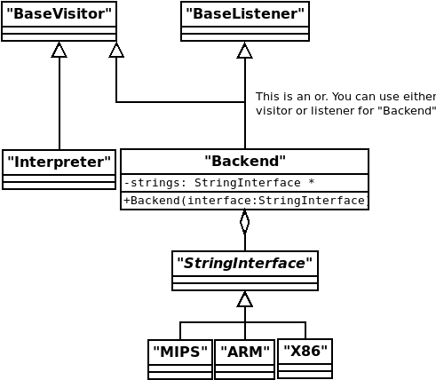

SCalc
The goal of this assignment is to implement a compiler for a simple imperative language called SCalc. This compiler will directly generate code for the following three backends:
x86 assembly
MIPS assembly
ARM assembly
You must also create an interpreter for SCalc
For the interpreter you will be computing the value of the expressions as you traverse the tree. However, when generating assembly code for each of the backends you are not allowed to perform any computations in the compiler. You must create assembly code to perform all of the computations that appear in the input file.
arm-none-eabi-as, linker arm-none-eabi-gcc) and then run using
an ARM simulator (qemu-arm).Your compiler will produce the assembly text files, not binaries. You must generate your assembly usinginja. Inja is a string template engine which allows you to make use of formatted strings. Its syntax is similar to Python’s jinja. You won’t need any advanced features to complete this assignment.
Your classes should follow a pattern of classes matching the following UML diagram (structure only, names should be reasonably changed):

Note that you must use the visitor pattern for the interpreter as it is impossible to revisit nodes during a loop when using the listener pattern.
Beyond these constraints you are allowed to use any internal representation that you wish, as well as emit any code that you wish, as long as the output is correct.
SCalc has integer variables, conditionals, loops, prints, and various integer expressions.
Language Specification
Implementation
Getting Started